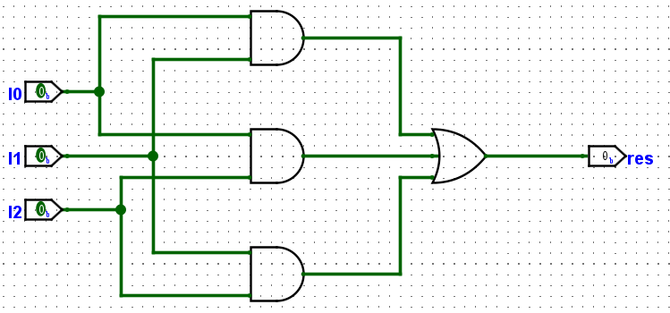

实验四 实验工具的使用
请在上课前完成
参考实验工具安装完成 Logisim Evolution 以及 Vivado 的安装。
实验任务
- 使用 Logisim 实现指定电路并进行仿真。
- 使用 Vivado 对电路生成的 Verilog 代码进行仿真。
- 使用 Vivado 进行上板验证。
Logisim 的基本操作
Abstract
本节内容为 Logisim Evolution 的简单使用，包括电路图绘制和将电路图导出为 Verilog。
我们将使用一个简单的电路展示 Logisim 的使用，请你在浏览本节内容后，完成动手做小节的另一个电路的设计。
绘图与仿真
绘图
Ctrl+5或鼠标点击对应按钮，可添加输入端口进入电路原理图中。Ctrl+7/8/9/0或用鼠标点击对应按钮，可以分别向电路原理图中添加非门、与门、或门、异或门。Ctrl+6或用鼠标点击对应按钮，可以向电路原理图中添加输出端口。-
Ctrl+3或用鼠标点击对应按钮后，可以在电路原理图中画线，找到连线的一端并按住鼠标拖动即可：
-
点击
File > Save保存电路图。
仿真检查电路功能
画好电路原理图之后，Ctrl+1 后即可通过点击输入端口来改变输入端口的输入值，从而可以通过遍历所有输入值来检查电路功能是否正常。其中，深绿色表示低电平，亮绿色表示高电平。

为输入输出端口命名，以便转为 Verilog
Ctrl+2 或鼠标点击对应图标后，双击输入输出端口，即可为其命名。只有将输入、输出端口命名，才可将其正常地转为 Verilog。
导出为Verilog
Vivado 无法读取 Logisim 的工程文件或原理图文件，需要通过将 Logisim 电路图转化为 Verilog 之后，方可在 Vivado 中进行电路实现。通过 Logisim 电路原理图导出 Verilog 的方法如下：
- 选择上方状态栏的
FPGA > Synthesize & Download。 -
在弹出的窗口中，选择目标板(Target board)为
FPGA4U。
-
点击
Settings按钮，并且将弹出窗口中FPGA Commander Settings选项下的Hardware discription language used for FPGA commander选项更改为Verilog，随后可关闭弹出窗口。
-
点击
Execute，随后点击弹出窗口中的Done即可完成。你可以忽略这一步给出的 Design is not completely mapped 的警告。 - 此时即可在工作目录下的
verilog/子目录中看到生成的 Verilog 文件，如果你不知道文件保存到了哪里，请查看弹窗Info中的信息确定你的工作目录以及导出文件的位置。对于本实验来说，有意义的代码文件存储在circuit/与gates/目录下。
动手做
-
浏览 Logisim 基本操作后，请绘制以下电路图。请注意，端口名称一定不要写错，三个输入端口分别为
I0、I1、I2，输出端口为res。
-
在完成电路图绘制后，请进行仿真，记录仿真结果。
-
将绘制的电路图导出为 Verilog。
Vivado 的基本操作
创建 Vivado 工程
- 启动 Vivado 之后，选择顶部快捷栏中的
File -> Project -> New。 - 在 Project Name 界面中修改工程名称及路径，请注意，路径和名称中不要有中文，以避免一些问题。
- 在 Project Type 界面，选择
RTL Project，子选项保持默认即可。 - 在 Default Part 界面，搜索并选择
xc7k160tffg676-2L。 - 点击
Finish即可完成工程创建。
添加或创建文件
工程创建完成后，可在 Project Manager 中选择 Add Sources，即可在工程中添加或创建文件。
constraints 为约束文件，主要有引脚约束、时序约束和物理约束等。
design sources 为用于综合的代码文件，其中书写功能逻辑。
simulation sources 为用于仿真的代码文件，其中书写测试逻辑。
添加用于综合的文件，即上一小节得到的 Verilog 代码，选择 Add or Create Design Source，
选择 verilog 子目录下的 circuit 和 gates 子目录的 Verilog 文件全部拷贝到工程中，随后点击 Finish 完成。
因为我们需要的是两个目录下的所有文件，因此可以通过 Add Directories 将两个目录下的全部文件添加进来。
Tip
本节实验中，是否勾选 Copy sources into project 选项对实验过程影响不大。
如果勾选，它会将你添加的文件拷贝到工程目录下 xxx.srcs/ 对应的目录下。
成功添加后，请检查 Design Sources 中的顶层模块是否正确设置，在本实验中，顶层模块应为 main。下图中红框部分为顶层模块的标识。
添加用于仿真的文件，本节实验中，我们提供了用到的仿真文件。选择 Add or Create Simulation Sources 将仿真文件添加进入工程。
添加约束文件，本节实验中我们同样提供了需要的约束文件，选择 Add or Create Constraints 将约束文件添加进入工程。
仿真
在进行仿真前，请检查仿真文件 Simulation Sources 中的顶层模块是否选择正确，本实验中应选择导入的 lab4_tb 作为顶层模块。一个工程中可以有多个仿真文件，但只有一个仿真顶层模块，如果你需要使用其他的仿真文件，可以通过右键并选择 Set as top 进行切换。

确认无误后，点击左边栏 SIMULATION -> Run Simulation，进行仿真。

首先认识一下界面，上栏图中按钮从左到右依次为：
- Restart：清空当前波形，准备进行下次仿真（Windows 下某些版本极易造成闪退）
- Run All：进行一遍仿真，直到遇到停止信号（如
$finish()或在 GUI 中设置的断点）或某一时间上限 - Run for xxx：与右侧两栏配合，表示从当前仿真位置开始，继续仿真多久
- Step：笔者并不清楚此功能，推测是多个断点间步进
- Relaunch Simulation：如果修改了仿真文件或用于综合的代码，需要重新加载
在波形界面栏中也有几个较为实用的按钮：
- Search：选中波形后，可以根据想要的值（完全匹配、高位匹配或低位匹配）搜索，找到该值所在的位置
- Save Waveform Congfiguration：如果对波形设置有修改（如添加或删除了信号，修改了信号的数制，信号线颜色等）可以通过保存得到配置文件，方便之后仿真时直接使用修改后的配置文件
- 在仿真界面中，通过
File > Simulation Waveform > Open Configuration可以打开之前保存的配置文件，打开后点击 Relaunch Simulation 即可生成对应波形
- 在仿真界面中，通过
- Zoom Fit：可以将当前缩放自动调整为较合适的大小
- 其他按钮的功能可以自行尝试，部分按钮需要先选中信号才能使用，没有特别需要注意的点
生成 bitstream 并烧录
Bitstream 文件是一种由比特流组成的文件，用于存储和传输数据。在我们的实验中，它用来存储 FPGA 的配置信息，可以通过烧录对 FPGA 进行重新编程。
在生成 bitstream 之前，我们需要检查并修改约束文件。找到并打开添加进工程的 constraints_lab4.xdc 并查看其中的内容。本实验中进行的约束均为引脚约束(Pin Constraints)，需要设置引脚分配和电气属性，你需要给本工程顶层模块 main 中的所有输入、输出端口即 I0, I1, I2, res 设置引脚约束。以 I1 的约束进行举例：
它为端口 I0 分配了引脚 AA10，这是板上最右侧的开关，你可以在 SWORD 板对应开关下方看到 AA10 的标记；同时，它规定了引脚的输入/输出标准为 LVCMOS15，此处不需要深究，感兴趣的同学可以自行搜索。
你需要修改下边这个约束，使端口 I2 分配到引脚 AA13 上，输入/输出标准为 LVCMOS15。请注意，你只能修改以下划线 _ 开头的内容（即 _SOME_PIN 以及 _which_signal），之后的实验中也以下划线开头为“需要修改部分”的提示。
set_property PACKAGE_PIN _SOME_PIN [get_ports {_which_signal}]
set_property IOSTANDARD LVCMOS15 [get_ports {_which_signal}]
修改约束文件后，你可以点击 PROGRAM AND DEBUG > Generate Bitstream 生成比特流。
生成比特流的结果将通过弹窗方式提示，如果生成失败请查看日志文件确定失败的原因。
得到 bitstream 后，我们需要将下载器连接到电脑上，点击 PROGRAM AND DEBUG > Open Hardware Manager > Open Target > Auto Connect 进行识别和连接，成功连接后，点击 Program Device 选择 xc7k160t 设备，在下载程序界面选择我们刚刚生成的比特流文件，将其下载到板上。这一步可能会出现驱动未安装的问题，请自行尝试解决，如果无法解决问题请及时联系助教。
板上操作
SWORD 板上有 16 个开关，我们之前将 I0, I1, I2 分别约束到了从右往左数第1、2、3三个开关，开关到下方对应的输入为 0。
请调节开关，并观察 Arduino 子板上 LED 的亮灭情况。
FAQ
Updated 2023.10.17
synthesis failed with NO Warnings/Errors
请查看“计算机名称”，如果为中文，请参照 Windows 10 修改电脑名称将计算机名称修改为英文。Windows 11 用户可以在设置-系统-系统信息-重命名这台电脑进行修改，也可以直接搜索“重命名你的电脑”。感谢吴cy同学发现的解决方法。
实验报告要求
Logisim 的基本操作
- 提供绘制的电路图的截图。
-
提供一张仿真时的截图，要求三个输入值分别为
0, 1, 1。并将你的实验结果填写到下表中（你不需要画出表格，将结果从上到下依次书写即可）：I0 I1 I2 res 0 0 0 0 0 1 0 1 0 1 0 0 0 1 1 1 1 0 1 0 1 1 1 1 -
导出 Verilog 后，找到工作目录下
verilog/circuit/中的文件。截图代码内容或将高亮代码粘贴在实验报告中。
Vivado 的基本操作
-
完成添加或创建文件步骤后，截图源代码结构部分，类似下图，点按图中圈出部分可以展开所有目录。要求必须展示出 Design Sources, Constraints, Simulation Sources 的内容。
-
完成仿真步骤后，截图仿真界面，要求波形缩放合适，能够在一张图中看到所测试的所有输入及对应的输出。与 Logisim 的基本操作中得到的真值表对照，查看结果是否一致。
-
完成板上操作步骤时，拍摄
I0, I1, I2对应开关为0, 1, 1时的 Arduino 上 LED 亮灭情况。回答：真值表中1(True)对应 Arduino 板上 LED 的亮还是灭。